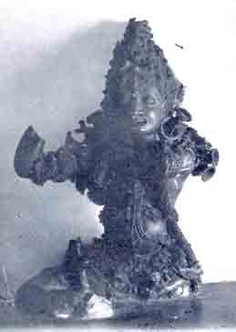

Dwara - Palaka

Early Medieval Bronze: Trichur Museum, Trichur.
Said to have been discovered underground, this 'guardian of the door', in common with images of this class, has the physical characteristics of a Daitya: tusk at either corner of mouth agape, round eyes surmounted by arched brows, fleshy neck and shoulders, and arms wielding mace or other weapon. Together with its companion at the Trichur Museum, this image perhaps once flanked the entrance of a Siva temple, or what is equally probable, a Swatantra Chandeswara shrine, i.e., a shrine with Chandeswara as the principal deity. If the latter assumption is correct, the dwara-palakas would be Chandanuga and Chandabhritya of Uttarakamikagama. Dwara-Palakas symbolise that stage of devotion, where the devotee has not only gained proximity to the deity, but also some distinctive feature of the deity, as for instance, the third eye.
K.V.R.
BACK